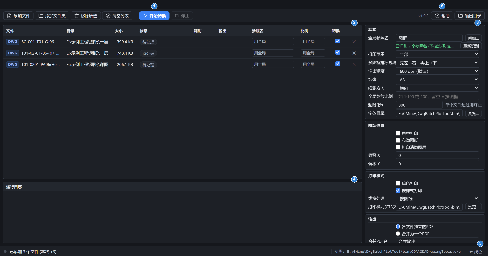

DWG/DXF 批量转 PDF — 基于 ODA/Teigha 引擎。下面按「界面长什么样 → 怎么用 → 参数什么意思 → 出问题怎么办」组织。

.dwg 和 .dxf。settings.ini，下次打开还在。| 列 | 作用 |
|---|---|
| 转换 | 勾选框，决定这个文件是否参与本次转换（加入时默认全勾上）。只影响本次，不改文件本身。 |
| 参照名 | 给单个文件指定参照名；留空（显示「用全局」）就用右边的「全局参照名」。 |
| 比例 | 给单个文件指定打印比例（格式同右边的「比例」）；留空（显示「用全局」）就用全局比例。 |
| 状态 | 转换后显示「成功 (N 页)」或失败原因。 |
| 输出 | 转换完成后显示 PDF 路径，点一下直接打开。 |
| ✕ | 把这行从列表里去掉（不删磁盘文件）。 |
点行选中，Ctrl+点可多选，Esc 取消选择。选中行后再点参照名明细里的一行，会直接填到那一行。
「参照名」= 图纸里放图框的块名或外部参照名。填上之后，引擎把每个命中的图框单独出一页：
* ? 通配（例如 Layout*_1 一次匹配 22 个）；先左→右，再上→下（默认，像读书一样逐行）／
先左→右，再下→上／先上→下，再左→右（逐列）／先下→上，再左→右。
同一行里的图框坐标差半张图框以内都算一行，不要求摆得多整齐。图框_Ref.dwg、主图用外部参照插进来。这种图里 AutoCAD 看到的块名
（块参照_1 之类）只是自动生成的、没有意义，有意义的是被参照的文件名。
程序在明细表里给外部参照标了紫色「外部参照」标签，填那个文件名可一次命中所有引用它的实例。
| 参数 | 说明 |
|---|---|
| 全局参照图框名 | 默认 图框。可编辑的下拉框：候选来自已加入图纸里的块名和外部参照文件名，也支持 * ? 通配。留空 = 整张图（不按图框分页）。旁边的「明细…」看实例数 / 空间 / 尺寸。 |
| 空间 | 仅模型空间 / 仅布局空间 / 全部。 |
| 多图框排序规则 | 一张图纸里有多张图框时的页面顺序：先左→右再上→下（默认）／先左→右再下→上／先上→下再左→右／先下→上再左→右。 |
| 输出精度 | 实际生效的分辨率，单位 dpi：300 / 600（默认） / 900 / 1200 / 1800 / 2400 / 3600。曲线的细分精度、嵌入图片、渐变填充三者都取这个值。线条与文字是矢量，不受影响。 |
| 纸张 | 默认 A3。另有「按图框(A3)」= 纸张按命中的图框长宽比定；A4/A3/A2/A1/A0；自定义宽高 (mm)。 |
| 方向 | 横向 / 纵向。 |
| 比例 | 写 1:100、1/100、1-100，或只写分母 100（= 1:100）。留空 = 按图框（缩放到纸张大小）。格式错会直接报错，不会被悄悄忽略。 |
| 超时(秒) | 单个文件的上限，超时后杀掉引擎子进程（默认 300 秒）。 |
| 字体目录 | 默认 <程序目录>\Fonts。方正 / 华文 / THFont 等非系统字体所在文件夹，缺了会掉字或乱码。可改成别的目录，改完立即生效。 |
| 居中 / 布满图纸 | 打印位置。 |
| 偏移 X / Y | 打印偏移 (mm)。 |
| 打印消隐图层 | 是否打印消隐对象。 |
| 单色打印 | 所有对象按单色出图。 |
| 按样式打印 | 默认勾选，用 CTB/STB 样式表出图。 |
| 线宽 | 按图纸 / 按比例缩放 / 不打印线宽。 |
| CTB文件 | 默认指向程序目录下的 PlotStyles\monochrome.ctb。 |
| 输出目录 | 默认程序目录下的 output\。改动后只保存你改过的值。 |
| 各文件独立的PDF / 合并为一个PDF | 前者输出 原名.pdf（重名自动变 原名 (2).pdf）；后者先各自出图再合并成一个 PDF。 |
| 输出目录结构 | 选「各文件独立的PDF」时，按源图纸相对添加时文件夹的路径在输出目录下建同样的子目录存放；单个添加的文件直接放在输出目录。「合并为一个PDF」只有一个文件，不分子目录。 |
| 现象 | 怎么办 |
|---|---|
| PDF 里中文变方块 / 掉字 | 「字体目录」指到含 SHX / TTF 字体的目录（默认 <程序目录>\Fonts）。 |
| 失败 | 失败原因写在底部「运行日志」里，状态列也会显示原因（引擎启动失败 / 超时 / 引擎异常 / 打印配置无效等）。 |
| 「未找到可打印内容」 | 参照名没匹配到任何图框。点「明细…」看实际有哪些名字，或清空参照名按整张图打印。 |
| 页序和图纸标注的「第 N 页」对不上 | 已修：出图顺序按 AutoCAD 的布局标签页顺序（TabOrder）。引擎日志里的 INFO: 布局[tab=N] 名称 可核对。 |
| 页面大小和选的纸张不一致 | 同批 PDF 页面大小统一；图纸里存了已不存在的打印机时，该布局沿用图纸自带的打印设置（日志有提示）。 |
| 下拉框里没有参照名 | 扫描在后台跑，先等一两秒；或点「重新识别」强制重扫。扫描失败的原因会写在日志里。 |
| 程序整个卡住 | 点工具栏「停止」中止当前批次；单个文件超时会自动杀掉引擎。 |
只启动本机服务并把界面地址打到标准输出，页面接口（POST + JSON）见 README.md。批量实测：
bin\DwgBatchPlotTool.exe --no-browser tests\Selftest\bin\Selftest.exe --batch "C:\图纸目录" "E:\输出目录" [--recursive]
引擎（ODA\ODADrawingTools.exe）也能脱离界面单独用：
ODADrawingTools.exe --plot <输入.dwg> <输出.pdf> [选项] ODADrawingTools.exe --plot-batch <输出目录> [选项] <输入1> <输入2> ... ODADrawingTools.exe --plot-merge <输出.pdf> [选项] <输入1> ... ODADrawingTools.exe --list-refs <输入.dwg>
| 变量 | 作用 |
|---|---|
DWGBP_ROOT | 指定程序目录（找 ODA\ / Fonts\ / PlotStyles\ 用，默认就是 exe 所在目录）。 |
DWGBP_SETTINGS | 指定设置文件路径（默认与 DwgBatchPlotTool.exe 同目录的 settings.ini）。 |
DWGBP_FONTS | 引擎的字体搜索目录（界面「字体目录」填的就是它）。 |
| 版本 | 变化 |
|---|---|
| 1.0.2 | 新增「输出精度」，300~3600 dpi 共 7 档，界面数字即实际生效的分辨率（曲线细分、嵌入图片、渐变填充统一取该值）； 修复 600 dpi 出图反而比 300 dpi 更糊的问题。 |
| 1.0.1 | 新增「多图框排序规则」四种次序；各文件独立的 PDF 按源图纸的相对路径建子目录； 修复 DWG 里用「仿宋_GB2312」等 TrueType 文字的图纸被误渲染成宋体；界面与帮助页显示版本号。 |
程序免费开源。若对您有帮助，可打赏一杯咖啡 ☕
DwgBatchPlotTool v__VERSION__ — 作者：唐明龙（QQ 979123550）